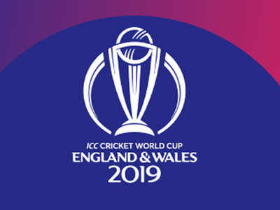

CRICKET
Cricket is a bat-and-ball game played between two teams of eleven players on a field at the centre of which is a 22-yard pitch with a wicket at each end, each comprising two bails balanced on three stumps. there many cricket leagues that take place all over the world as well as in India. The IPL (Indian Premier League) takes place once a year. The ICC Cricket World Cup is the biggest league which takes place. 8 countries take part in the ICC Cricket World Cup.
Cricket Tournaments:
INDIAN PREMIER LEAGUE (IPL)
The Indian Premier League is a professional Twenty20 cricket league, contested by eight teams based out of eight different Indian cities. The league was founded by the Board of Control for Cricket in India in 2007. The 8 Teams of the IPL are Mumbai Indians, Royal Chalengers Banglore, Chennai Super Kings, Kolkata Knight Riders, Punjab Kings, Delhi Capitals and Sunrisers Hydrabad.

ICC CRICKET WORLD CUP
The Cricket World Cup is the international championship of One Day International cricket. The event is organised by the sport's governing body, the International Cricket Council, every four years, with preliminary qualification rounds leading up to a finals tournameny.

MAHENDRA SINGH DHONI
Mahendra Singh Dhoni, is a former Indian international cricketer who captained the Indian national team in limited-overs formats from 2007 to 2017 and in Test cricket from 2008 to 2014. He also captains the IPL team Chennai Super Kings.

VIRAT KOHLI
Virat Kohli is an Indian cricketer and the current captain of the India national team. A right-handed top-order batsman, Kohli is regarded as one of the best contemporary batsmen in the world. He also captains the IPL team RCB(Royal Challengers Banglore).